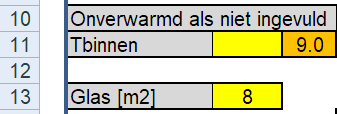
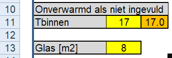
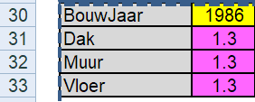
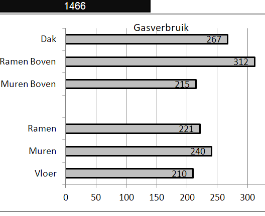
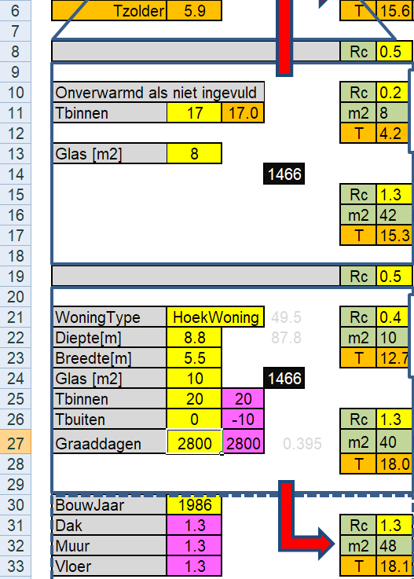
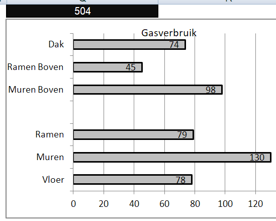
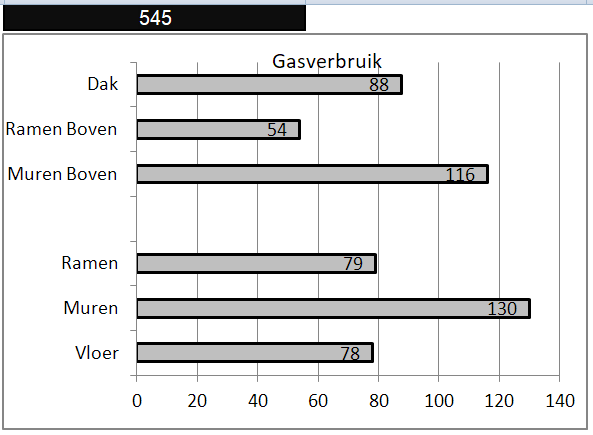
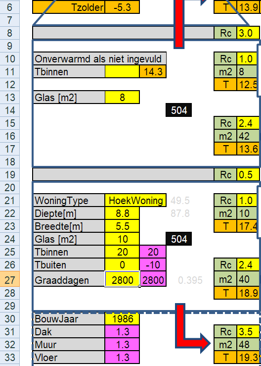
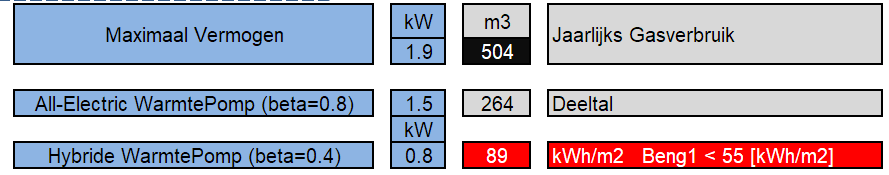
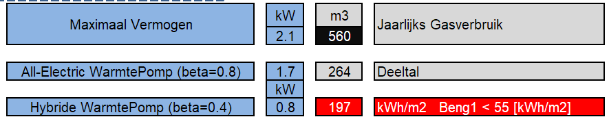

IWL_Voorbeeld_3
13 June, 2022
20:49
Omschrijving
Op deze pagina vergelijken we voorbeeld-1 en -2, het betreft hier hetzelfde huis, maar
in het eerste geval geen directe verwarming van de bovenverdieping en
in het tweede geval wel directe (matige) verwarming van de bovenverdieping.
Conclusies
Startsituatie
Onverwarmde verdieping | Verwarmde Verdieping |

| 
|

Glas boven: enkel, Ug = 5.8
Glas beneden: dubbel, Ug = 2.8
Gasverbruik Origineel
Het wel (matig) verwarmen van de bovenverdieping verhoogt het gasverbruik met 1466 - 1092 = 374 m3 gas.
Percentueel dus 100 * (1466 - 1092 ) / 1092 = 34 %
| 
|
Temperaturen Origineel
We zien dat het aardig kouder is op de verdieping als er niet wordt gestookt.
Wat natuurlijk ook opvalt, is dat in beiden situaties de temperatuur van de ramen boven erg laag is en dus zorgen voor een aardige koude straling.
 |
Isolatie
Als we alle bouwelementen extra isoleren en we willen dat in stappen doen, dat is de volgende volgorde de meest effectieve (waarbij glas prevaleert vanwege de comfort verhoging)
Gasverbruik na extra Isolatie
Wat nu opvalt is dat het verschil in gasverbruik bij wel en niet stoken van de bovenverdieping veel kleiner is geworden 100 * ( 545 - 504 ) / 504 = 8 %
 | 
|
Temperaturen na extra Isolatie
Eigenlijk valt hier niet zo veel op. Het (matig) stoken op de bovenverdieping geeft een kleine 3 graden temperatuur verhoging op de bovenverdieping. Dus ook zonder stoken op de bovenverdieping is het redelijk aangenaam op de bovenverdieping. De oppervlakte temperaturen van met name de ramen boven zijn een heel stuk comfortabeler geworden.
 |
|
Warmtepomp
Voor het noodzakelijke verwarmingsvermogen maakt het niet veel uit of we boven wel of niet direct verwarmen


Inzicht WarmteLek Woningen.